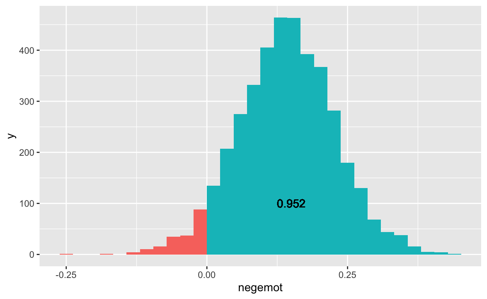

Overview
- t-test
- Regression
- Anova
Basic Statistical Models
Let us practice with some of the most common statistical analyses in R.
Consult Sections 3 and 4 in Help, My Collaborator Uses R! An Introduction to Reproducible Statistical Analyses in R and R help on the functions that we use.
Example data
Example data: glbwarm (accessible within this
tutorial).
Source: Erik Nisbet; http://afhayes.com/
Inspect the variables in the Environment.
Main data types: 1. Number: govact,
posemot, negemot, age. 2.
Character: ideology, sex,
partyid.
Inspect variable summaries.
summary(glbwarm) govact posemot negemot ideology
Min. :1.000 Min. :1.000 Min. :1.000 Length:815
1st Qu.:4.000 1st Qu.:2.000 1st Qu.:2.330 Class :character
Median :4.800 Median :3.000 Median :3.670 Mode :character
Mean :4.587 Mean :3.132 Mean :3.558
3rd Qu.:5.600 3rd Qu.:4.000 3rd Qu.:5.000
Max. :7.000 Max. :6.000 Max. :6.000
age sex partyid
Min. :17.00 Length:815 Length:815
1st Qu.:36.00 Class :character Class :character
Median :51.00 Mode :character Mode :character
Mean :49.54
3rd Qu.:63.00
Max. :87.00 t test: t.test()
Different types of t tests can be computed using one convenient formula.
Usage (in ?t.test):
t.test(x, ...)
### Default S3 method:
t.test(x, y = NULL,
alternative = c("two.sided", "less", "greater"),
mu = 0, paired = FALSE,
var.equal = FALSE,
conf.level = 0.95, ...)
### S3 method for class 'formula'
t.test(formula, data, subset, na.action, ...)- the function with just
xis for a one sample t test: specify the hypothesized population mean with argumentmu =.
- the function with
x, yis for paired samples t tests.
- the function with a formula is for two samples t tests;
ymust be a variable with two categories.
_ in a pipe
- All
tidyversefunctions have the data frame as the first argument. - This is not necessarily the case for base R functions or other
functions outside the
tidyverse. - If you use piping with these functions, use an underscore
(
_) as a placeholder to indicate where in the function the piped-in object should be entered. - A second use of the
_placeholder is when you do not use a function in the pipe.
Example
The code below tests whether the average arrival delay
(arr_delay0) differs between the two airports of origin
(origin) included in the flights4 tibble and
then extracts the t-statistic from the result. Pay attention to the
placement of the _.
flights4 |> t.test(arr_delay0 ~ origin, data = _) |> #a function where data is not the first argument
_$statistic #not a functiont-test Practice
Use a t test and the glbwarm data object for
testing the following null hypotheses (in this order):
- Average negative emotions about global warming (variable
negemot) are equal for females and males (variablesex) in the population. - In the population, average negative emotions about global warming are 3.0.
- On average, negative emotions about global warming are higher than
positive emotions about global warming (
posemot).
Send the results to the screen.
# Use the `t.test()` version that matches the kind of t test you need: on one
# mean, paired samples, or independent samples.# Note that the 'data = ' argument only works if we use the formula form 'y ~ x'.
# Independent samples t test:
glbwarm |> t.test(negemot ~ sex, data = _)
# For the other versions, the tibble name must be used and the dollar sign to
# fuly define the variable.
# t test on one mean (complete it yourself):
t.test(glbwarm$negemot, ... )# The code checker expects the three tests in the exact order as specified in
# the question.Intermezzo: Extracting Statistical Results Using Lists
The summary of results given when you run a t test or another statistical test is great, but it is useful to be able to access individual elements of that result (e.g. the p- or T-value) separately, either to use them in calculations or present them in reproducible reports.
In R, the results of statistical tests are stored as lists. Let’s briefly look at how to extract elements from a list.
Lists
- Vector: Collection of one type of elements.
- List: Collection of (possibly) multiple types of elements.
A List may store anything (your perfect cupboard?)
Examples:
- Data frame (or tibble): list of (logic/num/char) vectors
(variables).
Restriction: All vectors have the same length.
- Statistical results: list with coefficients, etc.
- Nested data: More than one value per variable per case.
Extracting statistical results
A t test yields a results object, which is a list.
# Store the results of a t test.
result_t <- glbwarm |> t.test(negemot ~ sex, data = _)
result_t #Default print method for these results.
Welch Two Sample t-test
data: negemot by sex
t = 3.3625, df = 798.32, p-value = 0.0008092
alternative hypothesis: true difference in means between group female and group male is not equal to 0
95 percent confidence interval:
0.1492659 0.5679741
sample estimates:
mean in group female mean in group male
3.733118 3.374497 - Results of t test are saved as data object
result_there, so we can inspect the results object in the Environment (if you run this code in RStudio).
Function str() shows the contents of a list.
Try to recognize the contents of this list.
str(result_t)List of 10
$ statistic : Named num 3.36
..- attr(*, "names")= chr "t"
$ parameter : Named num 798
..- attr(*, "names")= chr "df"
$ p.value : num 0.000809
$ conf.int : num [1:2] 0.149 0.568
..- attr(*, "conf.level")= num 0.95
$ estimate : Named num [1:2] 3.73 3.37
..- attr(*, "names")= chr [1:2] "mean in group female" "mean in group male"
$ null.value : Named num 0
..- attr(*, "names")= chr "difference in means between group female and group male"
$ stderr : num 0.107
$ alternative: chr "two.sided"
$ method : chr "Welch Two Sample t-test"
$ data.name : chr "negemot by sex"
- attr(*, "class")= chr "htest"- List elements are different: one number, two numbers, character
string.
- “names” attribute: the name(s) of the list element value(s).
- other attribute: other description of the list element value, e.g., the confidence level of the confidence interval.
Note:
- t test results are stored as object of class:
htest(bottom of the output); - Other R functions (e.g.,
print()) know what to do with the list.
Extracting an element from a list
We get elements from a list:
- Appending the element name between
[[]]to the list name; - Appending the element name with
$to the list name.
Extract the confidence interval from the t test results data object
(result_t) with [[]] and show (print) it
(instead of saving it as a new data object).
Hint: The element name must be in quotation marks. See the book section on Recursive Vectors (Lists).
result_t[["conf.int"]]Do the same thing but now use $.
Hint: See the book section on Recursive Vectors (Lists).
result_t$conf.intLet’s go one level down in the list of t test results:
- Extract the value of an attribute with the
attributes()function.
## List of 1
## $ conf.int: num [1:2] 0.149 0.568
## ..- attr(*, "conf.level")= num 0.95Show the confidence level (as a number) using only dollar signs
($), not square brackets ([[]]). Show the
result on the screen.
# The confidence level is an attribute (`attr` in the structure overview presented above), so use the `attributes()` function.
attributes()# Pull out the confidence interval from the results. Complete this code.
attributes(result_t)# Have a look at the output of the attributes() function. How can you get the number of the confidence level?
attributes(result_t$conf.int)Instead of the attribute value, we can get the attribute name with
the names() function.
Extract the label “conf.level” from the list of t test results.
# If you want the name of an attribute, apply the `names()` function to an attribute that you extract with attributes().
names(attributes( ))Let us practice some more.
Get the name and value (rounded to one decimal place) of the mean of
the second group in the results of the t test
(result_t).
# Build your code in steps. First, find the group means in the results.
str(result_t)# Second, pull the mean from the results data object. You know how to get only the second mean (complete the code below).
result_t$estimate# Third, round the mean with the round() function (use Help). Complete the code below.
round(result_t$estimate[[2]] )# Fourth, pull the name of the second group from the results data object. Complete the code below.
names(result_t$estimate)[2]Programming Tips
- Attribute names and attribute values are nested within a list
element.
attributes()creates a list; select from this list with $ or [[]].- ‘Drill’ into lower levels step by step:
attributes(result_t)returns all first-level names and attributes (as a list);attributes(result_t$conf.int)returns all attributes of this element;attributes(result_t$conf.int)$conf.levelgives the value of the conf.level attribute;
names(attributes(result_t$conf.int))returns the name of the conf.int attribute.
result_t$conf.int[1]yields the lower limit of the confidence interval
F test on Two Variances: var.test()
Let’s return to our t test. In contrast to SPSS, R only gives you what you ask for.
- If you ask for a t test, you get a t test but not checks on assumptions.
- You have to apply those checks yourself.
The version of the independent samples t test that we must use, depends on whether the population variances are equal for the two groups.
Use the function var.test to test if govact
variances are equal for females and males in the population.
Use the glbwarm data object and store the results as a
new data object named vartest.
vartest <- ____Hint: Have a look at the help for function
var.test. It is important that you get used to the way R
presents help on statistical functions.
Remember
- R formula: dependent variable/outcome ~ independent variable/predictor (and more).
Pull the p value from data object vartest that you have
just created.
Is the test on equal population variances statistically significant?
Hint: Review Session 5 if you do not know how to do
this. Remember: function str() is handy to see the contents
(structure) of a list.
vartest$p.valueIn R, we can use a function within an argument of another function.
Example for an independent samples t test:
var-equalargument isFALSEby default.- It must be
TRUEif the p value ofvar.test()is larger then .05.
Integrate the F test on equal population variances in the t test, such that the t test automatically uses the correct version: with or without equal population variances assumed.
Send the results to the screen (do not save it as a data object).
t.test(govact ~ sex, data = glbwarm, var.equal = _____ )# You already executed the t test in this tutorial. Add the var.equal argument.
t.test(govact ~ sex, data = glbwarm)# In the preceding exercise, you pulled the p value from the stored test result.
vartest$p.value
# Add it to the var.equal argument in such a way that a p value over .05 yields TRUE.# Replace the stored test result by the test function itself.
t.test(govact ~ sex, data = glbwarm, var.equal = vartest$p.value > 0.05)Linear Regression: lm()
Usage (in ?lm):
lm(formula, data, subset, weights, na.action,
method = "qr", model = TRUE, x = FALSE, y = FALSE, qr = TRUE,
singular.ok = TRUE, contrasts = NULL, offset, ...)See (the first edition) book p. 358-371 {Section 23.4} for using regression formulas: In the second edition, modeling part has been removed.
- including interactions and
- transformations within a formula.
Use lm() and tibble glbwarm to predict
support for governmental action (govact) from age, negative
emotions and party identification.
Store the results in data object model_1.
Hint: lm() is not a tidyverse function,
so you have to use the data = argument.
You can supply the name of the tibble (glbwarm) or pipe
this tibble into the lm() function using the dot
(.).
For quick inspection, data objects for results of statistical analyses always have:
- a
summary()function; - a
print()function .
Not for presentation of results!
Inspect the regression results (stored as model_1) with
summary() and print().
What happened to the character variable?
Linear Regression: Two-Way Interaction
lm() takes care of:
- creating dummies/indicator variables for a categorical predictor (character string or factor) - see preceding exercise;
- creating interaction variables.
(This is easier than in SPSS.)
Add an interaction effect between negative emotions (numeric) and age (numeric, in decades) to the regression model.
Save the results as data object model_1a.
Show the results with print(). Can you interpret the
interaction effect?
Hint: An interaction term (var1*var2)
in a regression formula yields the partial effects of the individual
variables and their interaction effect(s).
model_1a <- lm(govact ~ age*negemot + partyid, data = glbwarm)
print(model_1a)Now, predict support for governmental action (govact)
from age and an interaction effect between negative emotions (numeric)
and party identification (categorical).
Send the results to the screen. Can you make sense of the coefficients?
Hint: R creates all dummy variables and all interaction variables. That is convenient!
lm(govact ~ age + negemot*partyid, data = glbwarm)Analysis of Variance: lm() and
car::Anova()
In R, analysis of variance consists of two steps.
Step 1: ANOVA is linear regression with special contrasts
(contr.sum).
- Contrast
contr.sumgives deviations from the mean. - In analysis of variance, (main) effects are deviations from the (grand) mean.
- The
contrasts =argument requires:- a list:
contrasts = list(); - with contrast type for each categorical predictor:
contrasts = list(sex = contr.sum, partyid = contr.sum)
- a list:
Estimate a regression model with support for governmental action
(govact) predicted from respondent’s sex and party
identification, and the interaction between the two predictors.
Use contr.sum contrasts and save the results as data
object model_2.
model_2 <- lm(govact ~ sex * partyid, data = glbwarm, contrasts= ____ )Hint: The contrasts argument requires a
list of variable name and contrast type pairs.
Step 2: Calculate the sums of squares partition.
Functions:
stats::anova()for balanced designs.car::Anova()for (balanced and) unbalanced designs (Type !! or III sums of squares).
Use the Anova() function to show the sums of squares
partition with associated F tests of model_2 on the
screen.
Hint: The car package has been loaded
by the tutorial, so you do not have to include it if you use the
Anova() function.
Anova(model_2)The anova functions return a data frame, which you can use as any data frame.
For example, knit it to a pretty (HTML or PDF) table with
knitr::kable().
We will do that in the tutorial on Thursday.
Missing Values
How a stat:: package functions deal with missing values
depends on the na.action = argument:
na.omit(default and preferred) orna.exclude: listwise deletion;na.fail: stops with an error.
Check and, if necessary, set the na.action option in the
console of RStudio.
# Get the current option for na.action.
getOption("na.action")
# Set the option (if necessary).
options(na.action = "na.omit")Fancy Stuff
If you can execute regression models in R, you can also execute these using Bayesian statistics instead of traditional (frequentist) statistics.
The popularity of Bayesian statistics as an alternative to null
hypothesis significance testing is growing. If you want to be among the
first in your field going Bayesian, check out the short introduction
provided in Help, My
Collaborator Goes Bayesian! Why And How To Apply Bayesian Data
Analysis. Section 3.2 of the document offers a short introduction to
using the rstanarm package for Bayesian data analysis.
The below code estimates a regression model predicting support for
governmental action (govact) from age, negative emotions
and party identification, with an interaction effect of age with
negative emotions.
# Load the rstanarm package.
library(rstanarm)
# Estimate the regression model with rstanarm.
model_1aBayes <- rstanarm::stan_glm(govact ~ age * negemot + partyid,
data = glbwarm)
# Standard output to screen.
print(model_1aBayes)## stan_glm
## family: gaussian [identity]
## formula: govact ~ age * negemot + partyid
## observations: 815
## predictors: 6
## ------
## Median MAD_SD
## (Intercept) 4.5 0.3
## age 0.0 0.0
## negemot 0.1 0.1
## partyidIndependent -0.3 0.1
## partyidRepublican -0.6 0.1
## age:negemot 0.0 0.0
##
## Auxiliary parameter(s):
## Median MAD_SD
## sigma 1.1 0.0
##
## ------
## * For help interpreting the printed output see ?print.stanreg
## * For info on the priors used see ?prior_summary.stanregBayesian estimation yields a probability distribution for every parameter.
The printed summary gives the median of the probability distribution of a regression coefficient as its point estimate. In addition, it shows the Mean Average Deviation of the probability distribution: a simple type of standard deviation.
It is easy to get the posterior distributions as a data frame or tibble, so you can find any probability you like for a parameter.
# Extract the posteriors from the fitted model to a tibble.
posteriors <- as_tibble(model_1aBayes)
# Overview of variables in posteriors: each independent variable and the error term (sigma).
str(posteriors)tibble [4,000 × 7] (S3: tbl_df/tbl/data.frame)
$ (Intercept) : num [1:4000] 4.39 4.28 4.61 4.29 4.21 ...
$ age : num [1:4000] -0.02 -0.0183 -0.0283 -0.022 -0.0174 ...
$ negemot : num [1:4000] 0.1342 0.1366 0.0825 0.2359 0.205 ...
$ partyidIndependent: num [1:4000] -0.345 -0.334 -0.349 -0.268 -0.343 ...
$ partyidRepublican : num [1:4000] -0.587 -0.597 -0.46 -0.566 -0.648 ...
$ age:negemot : num [1:4000] 0.00572 0.00585 0.00742 0.00459 0.0046 ...
$ sigma : num [1:4000] 1.07 1.08 1.06 1.08 1.14 ...# Calculate the probability that the effect of negemot is larger than 0 in the population.
prob <- posteriors |>
summarize(b_negemot = mean(negemot > 0))
# Plot the probability distribution and display this information.
posteriors |>
mutate(positive = negemot > 0) |>
ggplot(mapping = aes(x = negemot)) +
geom_histogram(
aes(fill = positive),
boundary = 0,
bins = 30,
show.legend = FALSE
) +
geom_text(aes(label = prob$b_negemot, x = 0.15, y = 100))
The function launch_shinystan() in the
shinystan:: package (automatically loaded by package
rstanarm::) offers an interactive overview of estimation
and model checks and results.
shinystan::launch_shinystan(model_1aBayes)
# Note: This function does not work from within a tutorial.Up Next
- Next session: Modelling 2/Presenting results
- Note: Statistical analyses are not necessary for the Data Project. The Data Project focuses on visualizations. You can, however, use statistical analysis to detect patterns in your data that you then try to visualize. Next session, we will discuss how to do this. Although R offers some off-the-shelf plots for presenting statistical results, it is usually better to create a custom plot that hopefully is more attractive and more informative than off-the-shelf statistical plots.
- Catch up
- Check-in with your Study Buddy
- Prepare (see Canvas Module Guide):
- Complete the homework (homework room, study buddy, alone…)
- Submit questions by 4 PM the day before each tutorial on the Canvas Discussion Forum